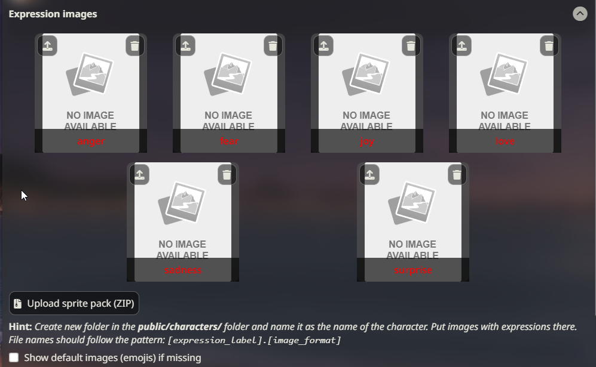

#
Character Expressions (角色表情)
#
这是什么？
表情图片是您的 AI 角色的图片（也称为"精灵图"），显示在聊天窗口旁边（或后面）。
表情图片可以使用与 SillyTavern 主应用程序一起运行的分类模型。这允许表情根据 AI 最近的聊天回应中表达的情感自动改变。
#
添加角色表情图片
- 打开扩展面板并展开"Character Expressions"部分。如果您已打开角色聊天，您将看到一个图片占位符网格。
 表情抽屉 - 点击网格中每个图片左上角的"导入"按钮，并选择您想应用到该情绪的图片。这将把图片以正确的文件名保存在
/data/<user-handle>/characters/(character_name_here)/文件夹中。 - 对所有要分配图片的表情重复此操作。
#
导入表情图片 ZIP 文件
使用"import ZIP"按钮，您可以导入包含表情图片集合的 zip 文件，这些图片将自动添加到当前选择的角色的正确文件夹中。zip 文件必须具有扁平的内部结构（无子文件夹），并且各个图片应该正确命名。导入 zip 不会自动重命名任何图片以使其匹配情绪。
#
手动更改表情
- 点击任何已上传的表情图片（精灵图）以在聊天界面附近（默认 UI 模式）或屏幕中央（视觉小说模式）显示它们。
- 使用
/emote (name)斜杠命令或匹配的快速回复来设置精灵图，无需打开扩展菜单。
#
自动更改表情
要在角色回复时自动设置表情，您有多种选择。 当启用消息流式传输时，表情会在每条消息或定期间隔更改。
#
分类模块如何工作？
classify 模块使用一个在 SillyTavern 主机（例如您的 PC 或 colab 机器）上运行的小型"情感解析"模型。该模型接收 AI 的新输出并检测文本表达的是什么类型的情感或情绪。虽然一条消息中可能表达多种情感，但模型只选择最可能的一种并返回给 SillyTavern。然后前端插件显示与该情感相关联的图片。
#
设置说明（本地分类）
- 确保您使用的是最新版本的 SillyTavern。
- 打开扩展面板并展开"Character Expressions"插件菜单。
- 在分类源下拉菜单中选择"Local"。
- 这将启动一次性从 HuggingFace Hub 下载分类模型（约 ~100 Mb）。
- 生成任何消息以验证分类是否正常工作并且精灵图是否出现。您也可以检查服务器控制台的调试日志。
本地分类默认有 28 个可能的图片标签：Cohee/distilbert-base-uncased-go-emotions-onnx
要使用 6 选项分类模型，请用文本编辑器打开 config.yaml 文件，并将 extensions.models.classification 变量的值更改为 Cohee/bert-base-uncased-emotion-onnx
之后，重启 ST 服务器以重新下载模型。要恢复，请再次更改 config.yaml 中的值。
#
设置说明（使用 LLM）
- 连接到任何受支持且正确配置的文本生成 API。
- 按照上述方式导入表情图片。
- 在分类源下拉菜单中选择"LLM"。
- 可选择配置分类指令提示。
- 生成任何消息以验证分类是否正常工作并且精灵图是否出现。您也可以检查服务器控制台的调试日志。
#
提示构建策略
主 LLM 源允许选择如何构建分类提示：
- Limited Context：仅发送最后一条消息和系统指令提示。
- Full Context：发送整个聊天历史记录，包括角色卡片。
#
设置说明（WebLLM）
- 安装官方 WebLLM 扩展。
- 按照上述方式导入表情图片。
- 在分类源下拉菜单中选择"WebLLM"。
- 可选择配置分类指令提示。
- 生成任何消息以验证分类是否正常工作并且精灵图是否出现。您也可以检查服务器控制台的调试日志。
#
设置说明（使用 Extras）
Warning
Extras 已弃用，可能会在未来更新中删除。
- 安装并运行 Extras，并启用
classify模块：python server.py --enable-modules=classify - 按照上述方式导入表情图片。
- 在分类源下拉菜单中选择"Extras"。
- 当 AI 向您发送回应时，适当的表情图片将自动显示。
Extras API 默认使用具有 6 个选项的分类模型：nateraw/bert-base-uncased-emotion
还有一个具有 28 个选项的模型：joeddav/distilbert-base-uncased-go-emotions-student
要使用此模型，您需要在 Extras 命令行中添加以下参数（前后都有空格）：
--classification-model=joeddav/distilbert-base-uncased-go-emotions-student
#
自定义表情
如何获得比默认提供的更多表情选项？您可以在扩展设置中设置自定义表情。您可以为自定义表情分配任何名称。它们将出现在表情图片列表中，并且可以像其他表情一样分配图片。它们将带有指示符显示这些是自定义的。
Tip
本地分类和 Extras 仅支持有限的表情列表。
如果您希望显示自定义表情，您需要训练一个支持标签的分类模型（超出本指南范围），或者您可以使用 LLM 或 WebLLM 作为分类源，两者都会自动使用所有现有表情 - 包括默认表情和任何自定义表情。
#
表情支持哪些图片格式？
允许任何图片格式，包括 webp 和动态 gif。
最常见的格式是带有透明背景的 PNG 文件。
#
使用默认表情
如果您没有角色的全部表情图片，或者根本没有图片，您可以选择多种默认显示选项。 所有这些都可以通过"Default / Fallback Expression"下的下拉菜单进行选择。
- 选择后备表情：如果选择了一个您没有图片的表情，则会显示后备表情。只需从下拉菜单中选择一个可用的表情。
- [No Fallback]：当不存在图片时，不显示任何内容。
- [Default emojis]：您可以使用基本 SillyTavern 安装中包含的内置默认表情。这些是简单的表情符号风格图片。
#
每个表情使用多个图片
可以为每个表情添加多个图片，以便在显示的表情中提供更多变化。 要启用此功能，只需切换Allow multiple sprites per expression。 您现在可以上传多个图片，任何额外的图片都将显示一个小标记。
可以通过点击手动选择单个图片，或通过 /expression-set type=sprite 命令选择，该命令将列出可用的精灵图图片，而不是表情。
每当自动选择具有多个图片的表情时，将随机选择现有图片之一。 如果您想在多次使用同一表情时强制选择该表情的新图片，可以启用Re-roll if same sprite is used again。
#
每个表情多个图片的命名约定
如果每个表情有多个图片，文件需要以特定方式命名。
文件需要以表情的名称开头，然后跟一个后缀，用点或破折号分隔。例如：joy.png、joy-1.png、joy.expressive.png
文件名必须遵循此格式，无论是直接上传还是 ZIP 导入。
#
精灵图文件夹覆盖
Note
显示名称（而不是角色卡片文件名）决定使用哪个图片集
如果您有多个具有相同显示名称的角色，它们都将使用相同的表情图片集。
如果您想为同名角色的每个版本使用不同的图片集，您可以使用精灵图文件夹覆盖。 文件夹覆盖也可用于定义同一角色的不同精灵图集（服装等）。
#
如何设置覆盖
- 在
/data/<user-handle>/characters中创建一个任意名称的文件夹并将图片放在那里，例如/data/<user-handle>/characters/Boris。 - 打开要覆盖精灵图的角色的聊天。
- 在"Sprite Folder Override"输入框中输入覆盖文件夹的名称并点击"Submit"。
- 精灵图列表将重新加载，"Sprite set"指示器应显示覆盖文件夹。
- 或者，您可以使用
/costume斜杠命令达到相同的效果：/costume Boris。 - 通过在覆盖文件夹名称前加上反斜杠，它将解析为当前角色精灵图文件夹中的子文件夹，例如，对于名为 Boris 的角色，
/costume \tracksuit将解析为/data/<user-handle>/characters/Boris/tracksuit文件夹。